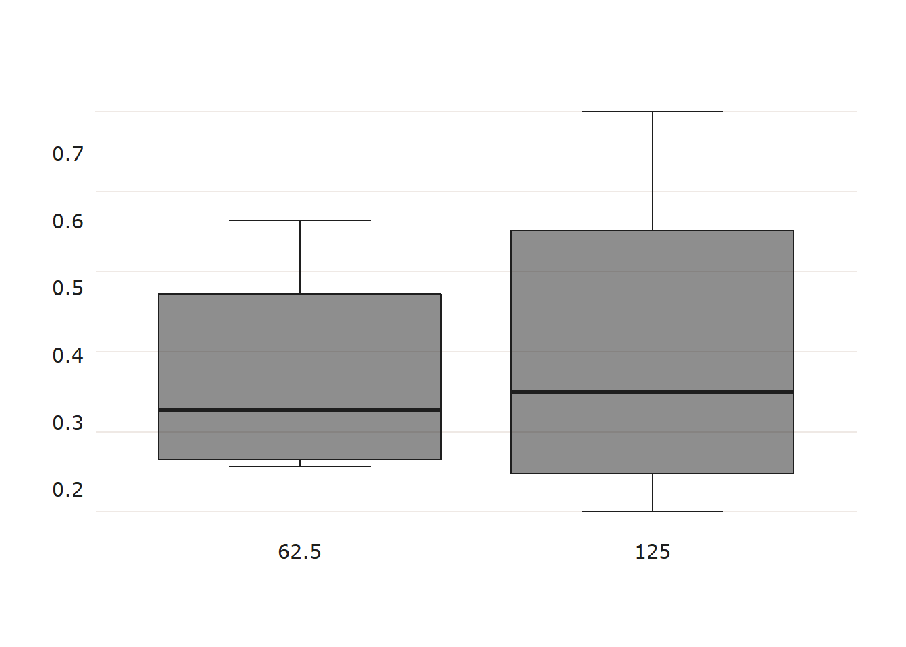
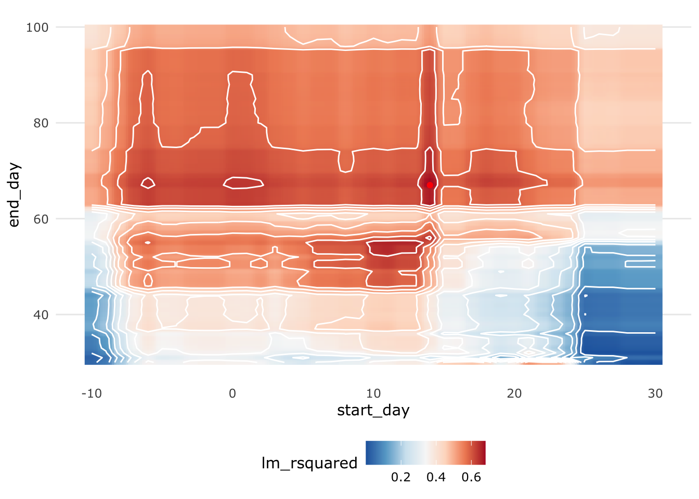
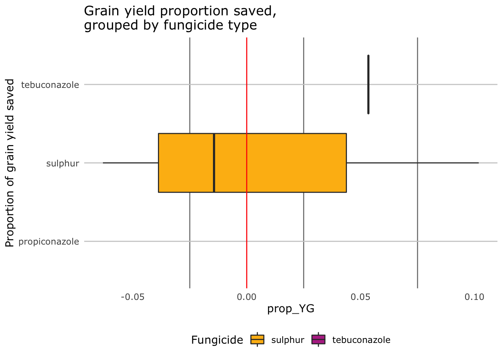
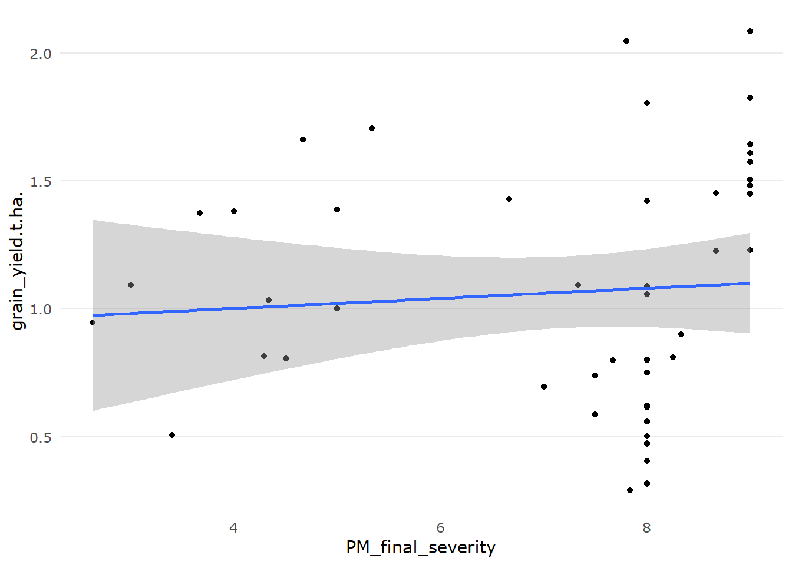

3 Preliminary Analysis
3.1 Explore and Visualise Data
Various factors have been studied in the previous experiments which may influence the following results. However, unless stated, the following plots and analyses were made disregarding effects from other factors not mentioned.
1 Fungicide type
2 Fungicide dose (varies only slightly within some fungicide types)
3 Number of fungicide sprays
4 Timing of fungicide spray/s relative to first sign of disease
5 Host cultivars (probably is a co-variate with season due to changing cultivars over time)
6 Experiment location
7 Row spacing
8 In-crop rainfall
9 Irrigated vs non-irrigated trials
10 Mean daily temperature in the weeks following spray application
11 Final disease rating
12 Two pathogen species cause PM (new discovery in 2018)
The data plotted below are from 26 field trials between (2001 - 2019) of which the details are described in Studies considered in meta-analysis section.
All data explored below are a list of mean values from each treatment applied in each experiment. Some experiments have in-season observations of disease incidence and severity. However, here we have summarised the data to show only the end of season observations.
3.1.1 Fungicides
3.1.1.1 Fungicide type
Let’s explore how many different types of fungicide were used and at what frequency.
PM_MB_means %>%
group_by(fungicide_ai, trial_ref) %>%
summarise() %>%
count(sort = TRUE) %>%
rename(Trials = n) %>%
ggplot(aes(x = reorder(fungicide_ai, Trials), y = Trials)) +
xlab("Fungicide active ingredient") +
ylab("N Trials") +
geom_col() +
scale_fill_usq() +
ggtitle(label = "Number of trials in which the\nspecified fungicide was used") +
scale_colour_usq() +
coord_flip()
Tebuconazole and propiconazole could be pooled as a triazole or demethylation inhibitors (DMI) fungicide treatment.
Amistar Xtra and Custodia are both contain strobilurin and triazole, however, because they contain differing dose ratios (inverted) pooling may not be appropriate.
Perhaps best way forward is to do an analysis of only the triazoles/DMIs. Then do another including azoxystrobin as a comparison.
The primary focus of this research is the effect of fungicide on mitigating yield loss to disease. To reduce the effect of location and seasonal influences we will investigate the proportion of grain yield saved relative to the no spray control.
First, let’s investigate the difference in the effect of the type of fungicide on proportion of yield saved. Proportion of yield saved is used in attempt to reduce variation between trials.
PM_MB_means %>%
group_by(fungicide_ai, total_fungicide) %>%
summarise(
n = length(prop_YG),
lower_2.5 = quantile(prop_YG, na.rm = T, c(0.025)),
median = median(prop_YG, na.rm = T),
mean = mean(prop_YG, na.rm = T),
upper_97.5 = quantile(prop_YG, na.rm = T, c(0.975))
) %>%
filter(n >= 5) %>% # remove any fungicide groups with less than 5 observations
arrange(desc(median)) %>%
kable(caption = "Fungicide effect on proportion of yield gain.") %>%
kable_styling(fixed_thead = T, full_width = T) %>%
footnote(general = "Fungicides with less than five observations were omitted from this table")| fungicide_ai | total_fungicide | n | lower_2.5 | median | mean | upper_97.5 |
|---|---|---|---|---|---|---|
| propiconazole | 2 | 27 | 0.2553 | 0.4392 | 0.4733 | 0.7495 |
| 200 g/L azoxystrobin + 80 g/L cyproconazole | 2 | 12 | -0.0407 | 0.4301 | 0.3200 | 0.5681 |
| 200 g/L azoxystrobin + 80 g/L cyproconazole | 1 | 18 | 0.0107 | 0.3257 | 0.3116 | 0.6590 |
| propiconazole | 1 | 26 | 0.1704 | 0.3063 | 0.2963 | 0.4054 |
| sulphur | 2 | 34 | 0.1564 | 0.2589 | 0.3146 | 0.6305 |
| carbendazim | 2 | 5 | 0.1621 | 0.1621 | 0.1621 | 0.1621 |
| tebuconazole | 1 | 36 | 0.0820 | 0.1239 | 0.1950 | 0.4288 |
| tebuconazole | 2 | 36 | -0.0228 | 0.0441 | 0.1348 | 0.4399 |
| sulphur | 1 | 30 | -0.1325 | 0.0148 | 0.0337 | 0.1700 |
| carbendazim | 1 | 10 | -0.0892 | -0.0115 | 0.0005 | 0.1003 |
| sulphur | 3 | 7 | -0.1027 | -0.0775 | -0.0435 | 0.0445 |
| 200 g/L tebuconazole + 120 g/L azoxystrobin | 1 | 18 | NA | NA | NaN | NA |
| 200 g/L tebuconazole + 120 g/L azoxystrobin | 2 | 18 | NA | NA | NaN | NA |
| control | 0 | 46 | NA | NA | NaN | NA |
| control | NA | 6 | NA | NA | NaN | NA |
| tebuconazole | 3 | 5 | NA | NA | NaN | NA |
| Note: | ||||||
| Fungicides with less than five observations were omitted from this table |
Let’s visualise this in a plot for one and two sprays only.
PM_MB_means %>%
mutate(fungicide_ai = as.factor(PM_MB_means$fungicide_ai)) %>%
filter(total_fungicide == 1 | total_fungicide == 2) %>%
filter(
fungicide_ai != "pyrazophos" &
fungicide_ai != "control" &
fungicide_ai != "benomyl" &
fungicide_ai != "Acibenzolar-S-methyl"
) %>%
mutate(fungicide_ai = factor(
fungicide_ai,
levels = c(
"carbendazim",
"pyraclostrobin",
"sulphur",
"200 g/L azoxystrobin +\n80 g/L cyproconazole",
"tebuconazole",
"propiconazole",
"200 g/L tebuconazole +\n120 g/L azoxystrobin"
)
)) %>%
ggplot(aes(y = prop_YG, x = fungicide_ai)) +
facet_grid(rows = vars(total_fungicide)) +
geom_boxplot(aes(fill = fungicide_ai)) +
geom_hline(aes(yintercept = 0), size = 0.5) +
labs(y = "Proportion of grain yield saved",
title = "Grain yield proportion saved\ngrouped by fungicide type") +
theme(legend.position = "none") +
scale_fill_usq() +
coord_flip()## Warning: Removed 228 rows containing non-finite values (stat_boxplot).
There is a small yield effect when applying fungicide and it is unclear how much a second spray improves yield saved. Interestingly sulphur sprays might be worth investigating when sprayed twice.
3.1.1.2 Fungicide Doses
We should check that all fungicide doses that were used were roughly the same if we are to compare between trials where dose might be different.
PM_MB_means %>%
filter(fungicide_ai == "tebuconazole" |
fungicide_ai == "propiconazole") %>%
select(
trial_ref,
year,
location,
first_sign_disease,
fungicide_ai,
dose_ai.ha,
total_fungicide
) %>%
ggplot(aes(x = as.factor(dose_ai.ha), fill = fungicide_ai)) +
xlab("Dose (g ai/ha)") +
ggtitle(label = "Total number of treatments for each respective tebuconazole dose") +
geom_bar() +
scale_fill_usq() +
scale_colour_usq()
All trials that used tebuconazole used approximately the same dose. Dose of the active ingredient ranged from 62.35 g per hectare to 60 g per hectare.
There is a large amount of variation in the propiconazole dose, let’s inspect the difference in yields for each dose.
PM_MB_means %>%
filter(fungicide_ai == "propiconazole") %>%
ggplot(aes(x = relevel(as.factor(dose_ai.ha), "62.5"), y = prop_YG)) +
xlab("Dose (g ai/ha)") +
ggtitle(label = "Yield for each respective propiconazole dose") +
geom_boxplot(fill = usq_cols("usq charcoal"), alpha = 0.5)## Warning: Removed 48 rows containing non-finite values (stat_boxplot).
This dose effect should be acknowledged in the meta-analysis. How many treatments of each dose have been investigated per trial?
table(as.character(PM_MB_means[PM_MB_means$fungicide_ai == "propiconazole", ]$trial_ref),
PM_MB_means[PM_MB_means$fungicide_ai == "propiconazole", ]$dose_ai.ha)##
## 62.5 125
## AM1303 3 0
## AM1304 3 0
## AM1305 3 0
## BB1305 3 0
## mung1112/01 2 2
## mung1112/02 2 2
## mung1617/01 0 15
## mung1617/02 0 15
## mung1718/01 0 6Two trials show both doses were applied in the same trial, mung1112/01 and mung1112/02. Let look at the difference in proportion of yield saved in these trials.
boxplot_usq(prop_YG ~ dose_ai.ha,
data = PM_MB_means[(PM_MB_means$trial_ref == "mung1112/01" |
PM_MB_means$trial_ref == "mung1112/02") &
PM_MB_means$fungicide_ai == "propiconazole",])
This plot, however, indicates that the previous plot might be skewed by high yielding trials.
3.1.1.3 Number of fungicide sprays
Let’s look at the frequency of sprays per fungicide.
##
## 0 1 2 3 7
## 200 g/L azoxystrobin + 80 g/L cyproconazole 0 18 12 4 0
## 200 g/L tebuconazole + 120 g/L azoxystrobin 0 18 18 0 0
## Acibenzolar-S-methyl 0 0 1 0 0
## benomyl 0 0 1 0 0
## carbendazim 0 10 5 0 0
## control 46 0 0 0 0
## propiconazole 0 26 27 3 0
## pyraclostrobin 0 4 4 0 0
## pyrazophos 0 0 1 0 0
## sulphur 0 30 34 7 3
## sulphur (SC) 0 0 0 0 0
## sulphur (Ultra SC) 0 0 0 0 0
## sulphur (WP) 0 0 0 0 0
## tebuconazole 0 36 36 5 03.1.1.4 Timing of fungicide sprays
When are fungicides sprayed in relation to first sign.
PM_MB_means %>%
mutate(
s1_DfromFS = fungicide_application_1 - first_sign_disease,
s2_DfromFS = fungicide_application_2 - first_sign_disease,
s3_DfromFS = fungicide_application_3 - first_sign_disease,
s4_DfromFS = fungicide_application_4 - first_sign_disease,
s5_DfromFS = fungicide_application_5 - first_sign_disease
) %>%
gather(
key = spray,
value = n_days,
s1_DfromFS,
s2_DfromFS,
s3_DfromFS,
s4_DfromFS,
s5_DfromFS
) %>%
drop_na(n_days) %>%
ggplot(aes(x = spray, y = as.numeric(n_days))) +
geom_violin() +
scale_x_discrete(
labels = c(
"First\nspray",
"Second\nspray",
"Third\nspray",
"Fourth\nspray",
"Fifth\nspray"
)
) +
ylab("Days to First Sign of Disease")
3.1.2 Mungbean cultivars
In general, the mungbean varieties have the following resistance to powdery mildew.
Berken: Highly susceptible
Crystal: Susceptible
Jade: Moderately susceptible
Let’s view a stacked bar plot of the number of sprays for both demethylation inhibitors, tebuconazole and propiconazole against each cultivar.
PM_MB_means %>%
filter(fungicide_ai == "tebuconazole" |
fungicide_ai == "propiconazole") %>%
group_by(host_genotype, fungicide_ai, trial_ref) %>%
summarise() %>%
count() %>%
rename(Treatments = n) %>%
ggplot(aes(x = host_genotype, y = Treatments, fill = fungicide_ai)) +
xlab("Cultivar") +
ylab("N Trials") +
ggtitle(label = "Cultivars used in either tebuconazole or propiconazole trials") +
geom_col() +
scale_fill_usq(name = "Fungicide AI")
3.1.2.1 Genotype yield variability
Does host cultivar significantly impact the yield? Let’s look at the volatility in yields to see if any cultivar yields better or has greater tolerance to powdery mildew. Below we plot distributions of mean trial yields for each cultivar.
First let’s look at overall yields for each cultivar, where trial is not a factor, for all treatments (spray and no spray).
# this could be converted into a shiny app as a chunk. Make each input for the function a shiny option
# Outputs the table and graph
source("R/yield_volatility.r") #function to investigate the volatility in yields
# Volitility is the range between the upper and lower 97.5 and 2.5 % quartiles
YV1 <-
yield_volatility(genotype_by_trial = FALSE, control_only = FALSE)
YV1[[2]] +
scale_fill_usq()## Warning: Removed 12550 rows containing non-finite values (stat_density).
## # A tibble: 4 x 2
## trial volatility
## <chr> <dbl>
## 1 Berken 1.32
## 2 Crystal 1.40
## 3 G. Diam 0.500
## 4 Jade 2.34Now let’s look at overall yields for each cultivar, where trial is not a factor, in only the no spray treatments.
## Warning: Removed 1389 rows containing non-finite values (stat_density).
## # A tibble: 4 x 2
## trial volatility
## <chr> <dbl>
## 1 Berken 1.24
## 2 Crystal 1.23
## 3 G. Diam 0.292
## 4 Jade 2.21Volatility of the cultivars are fairly similar when trial is not considered as a factor (when we inspect plots of all treatments and only spray treatments). Green Diamond shows little volatility however this cultivar is only featured in 1 trials
Let’s examine the same plots as above but only for the most commonly used trial site, Hermitage.
YV1_herm <-
yield_volatility(
genotype_by_trial = FALSE,
control_only = FALSE,
location = "Hermitage"
)
YV1_herm[[2]] +
scale_fill_usq()## Warning: Removed 8084 rows containing non-finite values (stat_density).
Jade shows a large amount of volatility, excluding Green Diamond, Crystal shows the next least volatility.
Let’s take a closer look at Crystal with spray management treatments and without.
YV1_crystal <-
yield_volatility(genotype = "Crystal", control_only = FALSE)
YV1_crystal[[2]] +
scale_fill_usq()## Warning: Removed 81 rows containing non-finite values (stat_density).
YV1_crystal <-
yield_volatility(genotype = "Crystal", control_only = TRUE)
YV1_crystal[[2]] +
scale_fill_usq()
There is a lot of variation between field trials for Crystal, but little variation within field trials.
Let’s look at Jade, to see if it differs.
## Warning: Removed 12506 rows containing non-finite values (stat_density).
For Jade there is high variation between trials and with-in. Perhaps indicating lower tolerance. Let’s look at the same plot with data only from no spray controls to see if the variation is the same.
## Warning: Removed 1331 rows containing non-finite values (stat_density).
There seems to be a noticeable shift in the probability curves between the two plots. Indicating that the tolerance in Jade may not as good as Crystal. A comparison between the fungicide efficacy for reducing powdery mildew severity and fungicide efficacy at mitigating yield loss.
Overall there seems to be an influence of cultivar however this variation is not as distinct as the variation between trials.
3.1.3 Row spacing
Some experiments were designed to investigate the effect of row spacing and plant density on powdery mildew disease. The results showed that the row spacing had no statistically significant effect on powdery mildew, but narrower rows in most cases increased yield significantly. This finding has also been shown by Kerry McKenzie’s work as well. Eight trials used a row spacing of 0.75 meters and tebuconazole as an active ingredient (AI).
PM_MB_means %>%
filter(fungicide_ai == "tebuconazole" |
fungicide_ai == "propiconazole") %>%
group_by(fungicide_ai, row_spacing, trial_ref) %>%
summarise() %>%
count() %>%
rename(Trials = n) %>%
ggplot(aes(x = as.factor(row_spacing), y = Trials)) +
xlab("Row Spacing (m)") +
ylab("N Trials") +
ggtitle(label = "Trial row spacing using tebuconazole") +
geom_col(aes(fill = fungicide_ai),
position = "dodge") +
scale_fill_usq(name = "Fungicide AI")
## Rows: 35
## Columns: 49
## $ trial_ref <fct> mung1011/01, mung1011/01, mung1011/02, mung10…
## $ year <fct> 2011, 2011, 2011, 2011, 2011, 2011, 2011, 201…
## $ location <fct> Hermitage, Hermitage, Kingaroy, Kingaroy, Kin…
## $ host_genotype <fct> Berken, Crystal, Berken, Crystal, Berken, Cry…
## $ trial_design <chr> "RCB", "RCB", "RCB", "RCB", "RCB", "RCB", "RC…
## $ plot_length.m. <dbl> 11, 11, 11, 11, 11, 11, 11, 11, 11, 11, 12, 1…
## $ plot_width.m. <dbl> 4, 4, 4, 4, 4, 4, 4, 4, 4, 4, 4, 4, 4, 4, 4, …
## $ plant_density <dbl> NA, NA, NA, NA, NA, NA, NA, NA, NA, NA, NA, N…
## $ row_spacing <dbl> 0.75, 0.75, 0.75, 0.75, 0.75, 0.75, 0.75, 0.7…
## $ replicates <dbl> 3, 3, 6, 6, 6, 6, 6, 6, 3, 3, 3, 3, 5, 5, 5, …
## $ planting_date <date> 2011-01-24, 2011-01-24, 2011-02-02, 2011-02-…
## $ emergence_date <date> NA, NA, NA, NA, NA, NA, NA, NA, NA, NA, NA, …
## $ flowering_date <date> 2011-03-22, 2011-03-22, NA, NA, NA, NA, NA, …
## $ pod_fill_date <date> NA, NA, NA, NA, NA, NA, NA, NA, NA, NA, NA, …
## $ mid_late_pod_fill <date> NA, NA, NA, NA, NA, NA, NA, NA, NA, NA, NA, …
## $ first_sign_disease <date> 2011-03-28, 2011-03-28, 2011-03-22, 2011-03-…
## $ trade_name <fct> Folicur, Folicur, Folicur, Folicur, Folicur, …
## $ fungicide_ai <fct> tebuconazole, tebuconazole, tebuconazole, teb…
## $ dose_ai.ha <dbl> 62.35, 62.35, 62.35, 62.35, 62.35, 62.35, 62.…
## $ n_treatment <int> 11, 4, 14, 4, 17, 7, 20, 10, 2, 3, 2, 3, 2, 3…
## $ fungicide_application_1 <date> 2011-03-28, 2011-03-28, 2011-03-23, 2011-03-…
## $ fungicide_application_2 <date> NA, NA, NA, NA, 2011-04-13, 2011-04-13, 2011…
## $ fungicide_application_3 <date> NA, NA, NA, NA, NA, NA, 2011-04-12, 2011-04-…
## $ fungicide_application_4 <date> NA, NA, NA, NA, NA, NA, NA, NA, NA, NA, NA, …
## $ fungicide_application_5 <date> NA, NA, NA, NA, NA, NA, NA, NA, NA, NA, NA, …
## $ fungicide_application_6 <date> NA, NA, NA, NA, NA, NA, NA, NA, NA, NA, NA, …
## $ fungicide_application_7 <date> NA, NA, NA, NA, NA, NA, NA, NA, NA, NA, NA, …
## $ total_fungicide <int> 1, 1, 1, 1, 2, 2, 3, 3, 1, 2, 1, 2, 3, 1, 2, …
## $ harvest_date <date> 2011-04-25, 2011-04-25, NA, NA, NA, NA, NA, …
## $ final_assessment <date> 2011-04-11, 2011-04-11, 2011-05-11, 2011-05-…
## $ PM_final_severity <dbl> 2.000, 2.333, 5.333, 4.333, 3.333, 4.000, 3.6…
## $ rating_scale <chr> "1-9", "1-9", "1-9", "1-9", "1-9", "1-9", "1-…
## $ disease_error <dbl> 0.0000, 0.5774, 1.1547, 0.5774, 0.5774, 0.000…
## $ D_error_type <chr> "stdev", "stdev", "stdev", "stdev", "stdev", …
## $ grain_yield.t.ha. <dbl> 1.7693, 1.5439, 1.0586, 0.7302, 0.9862, 0.875…
## $ raw_graded <chr> NA, NA, NA, NA, NA, NA, NA, NA, NA, NA, NA, N…
## $ Y_Msquare <dbl> 0.12382, 0.12382, 0.05401, 0.05401, 0.05401, …
## $ yield_error <dbl> 0.19442, 0.12833, 0.08244, 0.18687, 0.14650, …
## $ Y_error_type <chr> "stdev", "stdev", "stdev", "stdev", "stdev", …
## $ yield_gain <dbl> NA, NA, NA, NA, NA, NA, NA, NA, 0.072, 0.210,…
## $ prop_YG <dbl> NA, NA, NA, NA, NA, NA, NA, NA, 0.09756, 0.28…
## $ raw_data_avail <chr> "Yes", "Yes", "Yes", "Yes", "Yes", "Yes", "Ye…
## $ comments <chr> NA, NA, NA, NA, NA, NA, NA, NA, "final assess…
## $ days_harvest.planting <int> NA, NA, NA, NA, NA, NA, NA, NA, -40959, -4095…
## $ AUDPC_m <dbl> 10.50, 14.00, 98.67, 46.83, 60.00, 49.00, 28.…
## $ AUDPC_sd <dbl> 0.000, 6.062, 9.359, 18.237, 6.062, 0.000, 6.…
## $ AUDPS_m <dbl> 21.00, 28.00, 144.67, 81.67, 84.00, 84.00, 56…
## $ AUDPS_sd <dbl> 0.000, 12.124, 14.572, 17.616, 12.124, 0.000,…
## $ Inc_Ms <dbl> 1568.0, 1568.0, 15945.2, 15945.2, 15945.2, 15…Let’s plot the row spacing treatments for the response variables yield and disease severity. The main questions are:
Were there any statistical differences for mungbean yield or powdery mildew severity between row spacing treatments?
Can we pool certain row spacing that have no significant difference?
# Which row spacing leads to the higher disease severity
PM_MB_means %>%
filter(year == 2017 |
year == 2018) %>%
filter(fungicide_ai == "control") %>%
ggplot(aes(y = PM_final_severity, x = factor(row_spacing))) +
geom_boxplot(fill = usq_cols("usq charcoal"), alpha = 0.5) +
ggtitle("Powdery mildew variation between different row spacing")
# Which row spacing leads to the higher disease severity
PM_MB_means %>%
filter(year == 2017 |
year == 2018) %>%
filter(fungicide_ai == "control") %>%
ggplot(aes(y = PM_final_severity, x = factor(row_spacing))) +
geom_boxplot(fill = usq_cols("usq charcoal"), alpha = 0.5) +
facet_grid(cols = vars(location)) +
ggtitle("Powdery mildew variation between different row spacing") +
ylab("Final severity rating") +
xlab("Row spacing (m)")
In the Wellcamp site, wider row spacing reduces PM severity, the other sites it seems there was not enough variation to make a distinction between row spacing treatments.
# Which row spacing leads to the higher yield potential
PM_MB_means %>%
filter(year == 2017 |
year == 2018) %>%
ggplot(aes(
y = as.numeric(grain_yield.t.ha.),
x = row_spacing,
colour = location
)) +
geom_jitter(width = 0.01) +
ggtitle("Grain yield results for different row spacing at three locations") +
xlab("Row spacing (m)") +
ylab("Grain yield (t/ha)") +
scale_colour_usq()
The plots seem to imply when yield is limited, presumably by other abiotic factors, there is no effect of row spacing on yield, like in the Hermitage trial. However, if the average yield is more than approximately 1 t/ha then smaller row spacing has the potential to provide greater yield per hectare.
Overall row spacing may influence both powdery mildew severity and yield.
3.1.4 Yield vs in-season rain
In crop rain could be a significant factor which contributes to the end of season grain yield. To investigate this effect I will use a linear model (GY ~ SR) where seasonal rainfall represents a specific time frame with respect to planting time. Multiple time frames were tested from 20 days prior to planting, to 100 days after planting.
The multiple time frames were tested by a loop over the dates at the start of the season (to 90 days after planting) to find which date fits the best linear model for grain weight and in-crop rainfall.
The code for this process was moved to be contained within it’s own script and can be run as a job as it can take a long time.
To speed up the computation I split the script into four, ran the jobs and bound the data into one frame.
The output of the script is saved with the prefix lmInSeasonRainfall followed by the time windows the model is run.
For example lmInSeasonRainfall_20.40_50.80.csv holds the model results for start days between 20 and 40 days after planting to end window dates between 50 and 80 days after planting.
# The four data files were created from four scripts run as four jobs in Rstudio
# when the four jobs are finished they can be imported and combined into one data.frame
# source(Rainfall_x_cropYield_s-10.09_e30.65.R)
# source(Rainfall_x_cropYield_s-10.09_e65.100.R)
# source(Rainfall_x_cropYield_s10.30_e30.65.R)
# source(Rainfall_x_cropYield_s10.30_e65.10.R)
lm_rain1 <-
read.csv("cache/lmInSeasonRainfall_-10.09_30.64.csv",
stringsAsFactors = FALSE)
lm_rain2 <-
read.csv("cache/lmInSeasonRainfall_-10.09_65.100.csv",
stringsAsFactors = FALSE)
lm_rain3 <-
read.csv("cache/lmInSeasonRainfall_10.30_30.64.csv",
stringsAsFactors = FALSE)
lm_rain4 <-
read.csv("cache/lmInSeasonRainfall_10.30_65.100.csv",
stringsAsFactors = FALSE)
lm_rain <- rbind(lm_rain1, lm_rain2, lm_rain3, lm_rain4)Now we have read in the data from the previously computed models let’s find the linear model which has:
- The lowest P value
- the highest adjusted r squared value
## start_day end_day lm_pval lm_rsquared lm_adj_rsquared
## 2202 14 67 0.0005233 0.68 0.6509## start_day end_day lm_pval lm_rsquared lm_adj_rsquared
## 2202 14 67 0.0005233 0.68 0.6509## start_day end_day lm_pval lm_rsquared lm_adj_rsquared
## 2202 14 67 0.0005233 0.68 0.6509To visualise the model fits we will use a heat map to describe how the models faired in relation to the rainfall windows. log of the p value was used to improve the resolution of small very small p values.
ggplot(lm_rain, aes(x = start_day, y = end_day, z = log(lm_pval))) +
geom_raster(aes(fill = log(lm_pval)), interpolate = TRUE) +
geom_contour(bins = 15, colour = "white") +
geom_point(data = lm_rain[which(lm_rain$lm_pval == min(lm_rain$lm_pval)), ],
aes(x = start_day, y = end_day),
colour = " red") +
scale_fill_distiller(palette = "RdBu", direction = -1) 
ggplot(lm_rain, aes(x = start_day, y = end_day, z = lm_rsquared)) +
geom_raster(aes(fill = lm_rsquared), interpolate = TRUE) +
geom_contour(bins = 15, colour = "white") +
geom_point(data = lm_rain[which(lm_rain$lm_rsquared == max(lm_rain$lm_rsquared)), ],
aes(x = start_day, y = end_day),
colour = " red") +
scale_fill_distiller(palette = "RdBu") 
ggplot(lm_rain, aes(x = start_day, y = end_day, z = lm_adj_rsquared)) +
geom_raster(aes(fill = lm_adj_rsquared), interpolate = TRUE) +
geom_contour(bins = 15, colour = "white") +
geom_point(data = lm_rain[which(lm_rain$lm_rsquared == max(lm_rain$lm_rsquared)), ],
aes(x = start_day, y = end_day),
colour = " red") +
scale_fill_distiller(palette = "RdBu") 
The approximate period when in-crop rainfall impacts the most on the mean harvest is between 14 - 67 days after planting.
3.1.5 Season range and first incidence
Mungbean is a summer crop and powdery mildew requires cool conditions to establish. Therefore the disease can be avoided by planting early in summer or spring, avoiding cooler temperatures at the end of some seasons. Can we visualise when PM is most likely to establish over the calendar year?
I’ll build a plot of horizontal lines indicating the season length and use a dot on the line to indicating the day of the year first sign was observed for that trial.
# Create the data frame for the plot
source("R/import_data.R")
PM_MB_means <- import_data()
season_dates <- PM_MB_means %>%
group_by(trial_ref) %>%
summarise(
Planting_date = unique(planting_date),
Harvest_date = unique(harvest_date),
First_sign_PM = unique(first_sign_disease),
season_length = as.Date(unique(harvest_date)) - as.Date(unique(planting_date))
)
season_dates$Planting_day <- yday(season_dates$Planting_date)
season_dates$Disease_day <- yday(season_dates$First_sign_PM)
season_dates[1:2, "Planting_day"] <- 1
# yday(as.Date("2012-02-28") - 7) # Correct dplanted in december and emerged in February, Assuming due to lack of rain or recording error. Using 7 days prior to emergence day as planting day
season_dates$Harvest_day <-
season_dates$Planting_day + season_dates$season_length
first_day_month <- c(0, 31, 59, 90, 120, 151, 181, 211, 243, 273) + 1
axis_labels_date <-
c(
format(Sys.Date() - yday(Sys.Date()) + first_day_month[1], "%b-%d"),
# Jan
format(Sys.Date() - yday(Sys.Date()) + first_day_month[2], "%b-%d"),
# Feb
format(Sys.Date() - yday(Sys.Date()) + first_day_month[3], "%b-%d"),
# March
format(Sys.Date() - yday(Sys.Date()) + first_day_month[4], "%b-%d"),
# April
format(Sys.Date() - yday(Sys.Date()) + first_day_month[5], "%b-%d"),
# May
format(Sys.Date() - yday(Sys.Date()) + first_day_month[6], "%b-%d"),
# June
format(Sys.Date() - yday(Sys.Date()) + first_day_month[7], "%b-%d"),
# July
format(Sys.Date() - yday(Sys.Date()) + first_day_month[8], "%b-%d"),
# August
format(Sys.Date() - yday(Sys.Date()) + first_day_month[9], "%b-%d"),
# Sept
format(Sys.Date() - yday(Sys.Date()) + first_day_month[10], "%b-%d") # October
)
# reorder the factors so they will appear in chronilogical order
# I used First sign because all trials have recorded this
season_dates$trial_ref <-
factor(season_dates$trial_ref,
levels = levels(season_dates$trial_ref)[rev(order(season_dates$First_sign_PM))])
# Plot
season_dates %>%
ggplot() +
geom_pointrange(aes(
x = trial_ref,
y = Disease_day,
ymin = Planting_day,
ymax = Harvest_day
)) +
scale_y_continuous(limits = c(
0,
max(
season_dates$Planting_day +
season_dates$season_length,
na.rm = TRUE
)
),
labels = axis_labels_date,
breaks = first_day_month) +
geom_point(aes(x = trial_ref, y = Disease_day)) +
coord_flip() +
ggtitle("Season length and when powdery mildew was first spotted\nin each respective trial")## Warning: Removed 4 rows containing missing values (geom_segment).
In most years, regardless of the age of the crop, PM establishes in March.
3.1.5.1 Effect of Fungicide
Fungicide effect on proportional yield gain with respect to time of application
First let’s look at the quantiles for each fungicide irrespective of other factors.
We will focus on proportional yield gain, compared to no treatment control, as this should partially correct for some spatial and seasonal effects.
# plot table as a box plot
PM_MB_means %>%
filter(
fungicide_ai == c(
"200 g/L tebuconazole +\n120 g/L azoxystrobin" ,
"200 g/L azoxystrobin +\n80 g/L cyproconazole",
"tebuconazole",
"propiconazole",
"sulphur"
)
) %>%
ggplot(aes(y = prop_YG, x = fungicide_ai)) +
geom_boxplot(aes(fill = fungicide_ai)) +
geom_hline(aes(yintercept = 0), size = 0.5, colour = "red") +
labs(x = "Proportion of grain yield saved",
title = "Grain yield proportion saved,\ngrouped by fungicide type") +
theme(
panel.grid.major = element_line(colour = "grey80"),
panel.grid.minor = element_line(colour = "grey50"),
panel.background = element_rect(fill = NA)
) +
guides(fill = guide_legend(title = "Fungicide")) +
scale_fill_usq() +
coord_flip()## Warning: Removed 29 rows containing non-finite values (stat_boxplot).
There was some hope groups of fungicide could be combined, i.e. propiconazole and tebuconazole, however it seems that they have different efficacies. Let us look to see if there is anything skewing the above.
We need to also define the relationship between yield loss and disease severity. When exploring this data we should look primarily at the no spray control plots
PM_MB_means %>%
filter(fungicide_ai == "control") %>%
ggplot(aes(x = PM_final_severity, y = grain_yield.t.ha.)) +
geom_point() +
geom_smooth(method = "lm")## `geom_smooth()` using formula 'y ~ x'## Warning: Removed 3 rows containing non-finite values (stat_smooth).## Warning: Removed 3 rows containing missing values (geom_point).
From the data that we have, it is difficult to determine if there is an association between powdery mildew severity and grain yield.